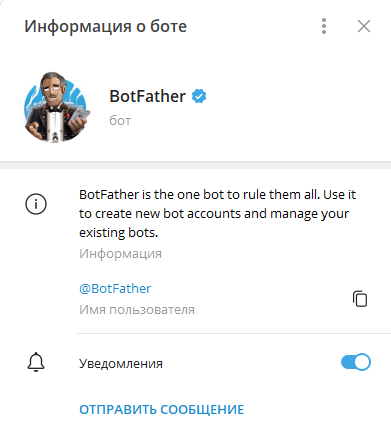
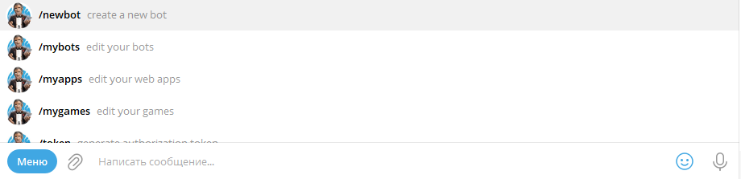
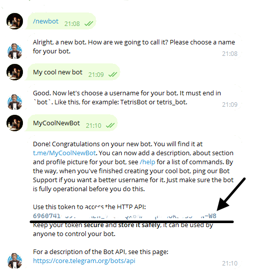

![]()
Telegram
Этот раздел посвящен библиотеке для работы с Telegram API в 1С:Предприятие, OneScript и CLI. На данной странице описаны все действия, необходимые для полноценного начала работы
Начало работы
-
Создайте бота Telegram
- Все действия при работе с Telegram API осуществляются посредством ботов. Для создания нового бота необходимо в мессенджере начать диалог с @BotFather

- Выбрать в меню команду /newbot

- BotFather предложит вам выбрать имя и никнейм бота, после чего процедура создания будет завершена
-
Сохраните токен, который вам прислал BotFather после завершения создания бота

-
(Дополнительно) Определитесь с целью взаимодействи я
Созданного вами бота теперь можно применить двумя способами
- В качестве чат-бота
- Для автоматизации ведения канала
В зависимости от выбранного способа примения будет отличаться способ получения ID чата - параметра, отвечающего за определение объекта взаимодействия.
В случае с чат-ботом, ID чата будет являться ID пользователя, с которым бот осуществляет диалог. Если же бота необходимо использовать для ведения канала, то, после добавления его в качестве администратора, вместо ID чата можно использовать имя канала через @ (@MyChannel)
Токен и ID чата являются основными параметрами всех методов работы с Telegram API